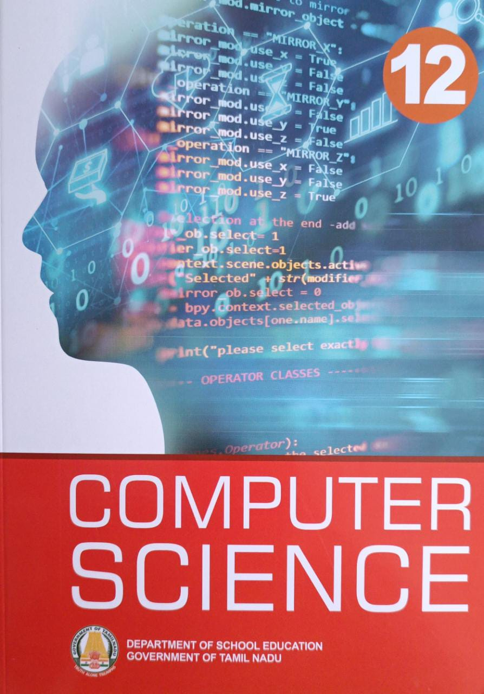

Computer science
Author:manoj
Description: Computer science focuses on the development and testing of software and software systems.

To Kill a Mockingbird
Author: Harper Lee,
Description:The novel is a bildungsroman, or coming-of-age story, and chronicles the childhood of Scout and Jem Finch as their father Atticus defends a Black man falsely accused of rape.

One Hundred Years of Solitude
Author:Gabriel García Márquez
Description: One Hundred Years of Solitude tells the story of the fictional Colombian town Macondo and the rise and fall of its founders, the Buendía family.

A Passage to India
Author:E.M. Forster
Description:The novel examines racism and colonialism as well as a theme Forster developed in many earlier works, namely, the need to maintain both ties to the earth and a cerebral life of the imagination.